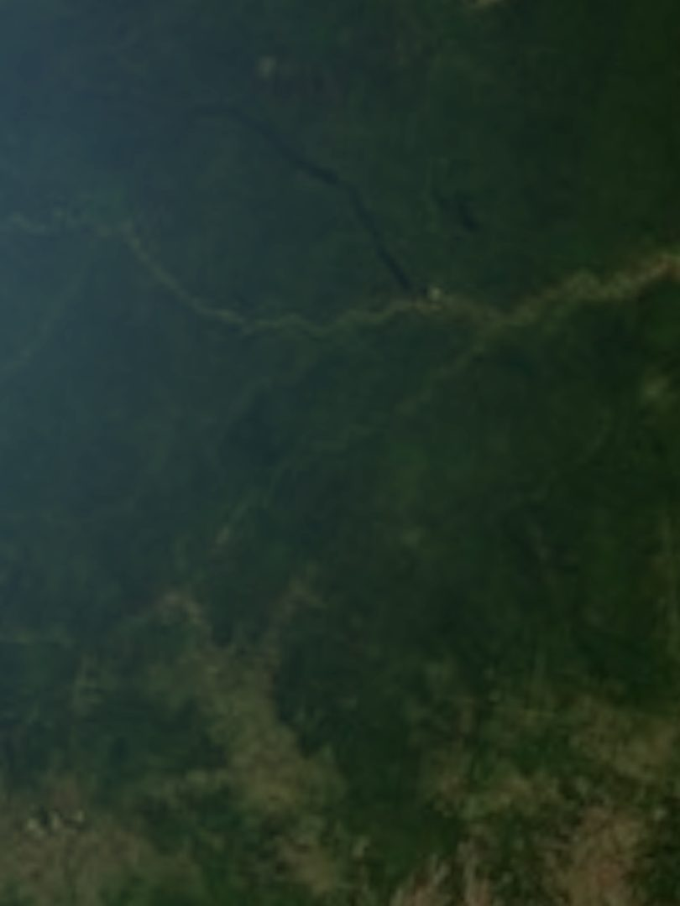
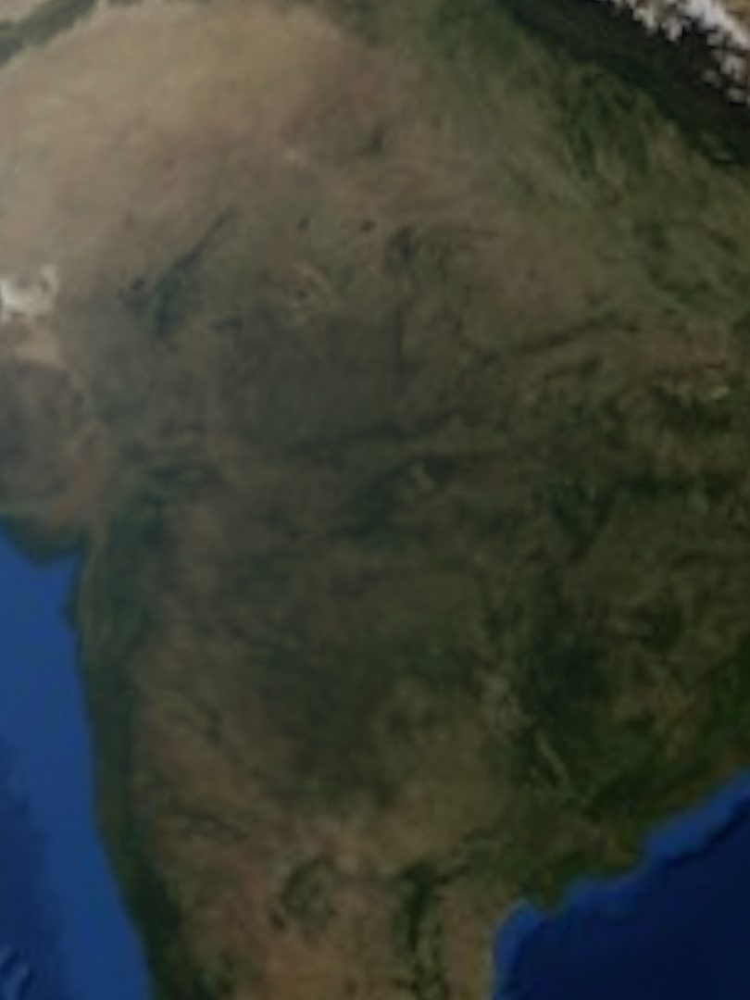
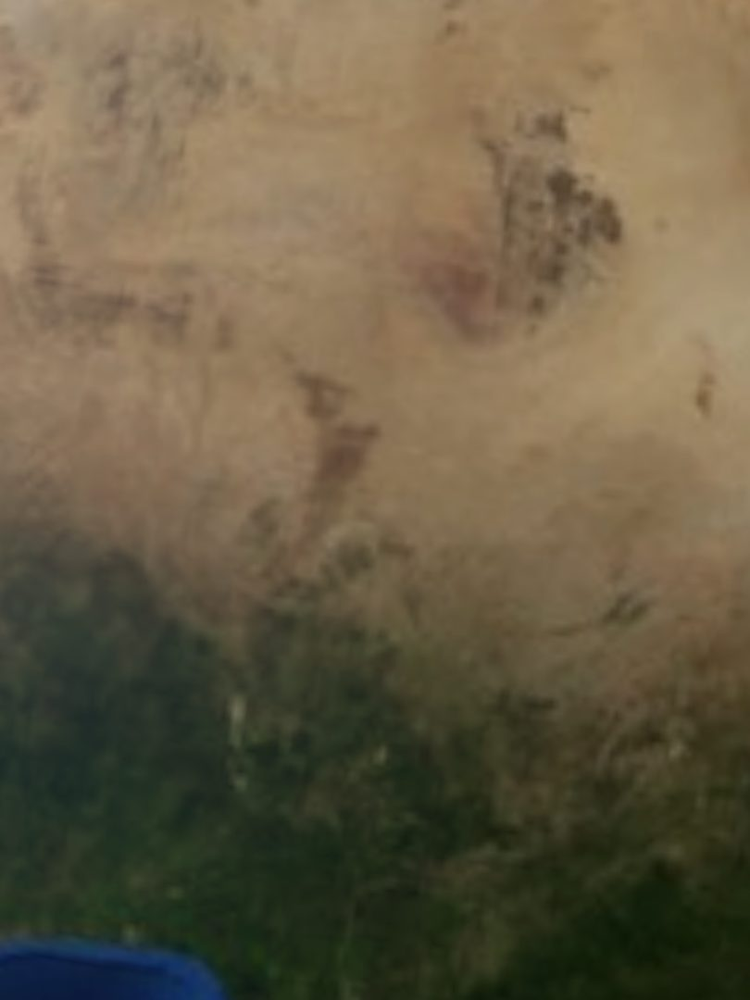

Undergraduate thesis · Tata Institute of Social Sciences · 1990–2023
Development.At whatplanetary cost?
Planetary Boundary Transgressions and Divergent Socio-Economic Pathways. A world-level study of environmental pressure and human development across 182 countries.
01 · The question
Do better lives cost the planet more?
Countries have grown richer, healthier and more urban since 1990. This study asks whether that progress has come with more pressure on the planet, and whether countries follow shared pathways of development and pressure over three decades.
It combines six environmental-pressure indicators into one Planetary Pressure Index (PPI), groups countries into development–pressure profiles, and follows them across 1990–2000, 2001–2010 and 2011–2023.
Planetary Pressure Index
One 0–100 score for how hard a country presses on the environment, built from six indicators. Higher means more pressure than other countries; it is relative to this sample, not a physical limit.
2022: Sweden 19.8 · India 41.6
United States 47.9 · Qatar 73.5
Average of 181 countries: 35.3
Development profiles
Countries grouped by how developed they are (income, health, cities) together with their pressure score, using k-means clustering. Four profiles, C1 to C4.
C1 low development, lower pressure
C4 high development, higher pressure
India 2022: C3 · United States: C4
Confidence interval
The range a number would likely fall in if the data had come out slightly differently. Every estimate here is shown with its 95% interval; if a change’s interval includes zero, it is not statistically significant.
Mean PPI 2022: 35.3
95% CI 33.3 to 37.3
Correlation (r)
How closely two measures move together across countries, from −1 to +1. Zero means no straight-line link. It describes a pattern, not a cause.
PPI vs life expectancy, 2022
r = 0.32 (moderate, positive)
95% CI 0.18 to 0.44
02 · Six pressures, seen from orbit
Forests, fields, air and energy
The index combines renewable energy share and forest cover (both reversed: less means more pressure), agricultural land, fertiliser use, fine-particle air pollution and energy use per person. Each is standardised, averaged when at least four are available, and rescaled to 0–100 across all periods. Values below are 2011–2023 averages from the thesis dataset.




03 · What the evidence shows
Better lives. Unchanged pressure.
Every country-year from 1990 to 2023 is placed on the thesis's pooled PPI scale, so the story can be followed year by year. The three cards are formal statistical tests; each verdict follows from its 95% confidence interval.
Each circle is a country, sized by population and coloured by its nearest published profile in that year. The badge shows the Pearson correlation with its 95% Fisher-z interval and the number of countries.
04 · Pressure fingerprints
Every country presses differently
Each petal is one indicator, scaled to the country's percentile among all countries in the chosen year: a longer petal means more pressure than most. Indicators a country did not report that year are left blank rather than drawn as zero. Recent years are thinner because several series are published two or more years late.
India
05 · The pattern
Development improves. Pressure does not disappear.
Life expectancy rose in almost every country while the average pressure index did not move. Development has not, on this evidence, become independent of environmental pressure.
06 · Pathways
Four profiles, three decades
Countries fall into four development profiles. As countries develop they tend to move up the ladder, from C1 towards C4, and pressure rises with them. These are the published results, estimated on decade averages.
The profiles were estimated on decade averages; the year-by-year shares above use the same centres. Moves record changes in model-assigned profile, not verified gains or losses in sustainability.
Two groups separate more cleanly, but four keep useful development tiers. The thesis uses K = 4 and treats the profiles as a typology.
Bivariate OLS of each outcome on the PPI. Filled points are significant at 5%; bars are 95% Fisher-z intervals.
07 · The map, year by year
Profiles and pressure, 1990 to 2023
Colour every country by its pressure score or by its development profile, and move through 34 years. Pressure is highest in the Gulf, much of Europe and North America; the green and blue profiles spread as countries develop.
08 · Country by country
One country, every year
Choose any of the 182 countries to follow its pressure score, health and income from 1990, and the development profile it belonged to each year.
Solid points: thesis data. Hollow points: provisional values from the live World Bank feed for years after 2023, on the same scale.
09 · Latest data
Updated weekly
A scheduled job fetches the newest World Bank values every Monday and places new years on the published scale, without re-estimating anything.
10 · Method and limits
How it was done, and what it cannot say
Standardise and combine
Z-scores put six indicators on one scale; their average forms the PPI when at least four are available, rescaled to 0–100 for every period.
Group comparable profiles
One k-means model on all country-periods using PPI, log GDP per person, life expectancy, infant mortality and urbanisation, with K = 4.
Track transitions
The same model assigns profiles in each period, so moves can be counted for countries grouped in both periods.
Examine associations
Separate bivariate least-squares regressions of each outcome on the PPI, period by period.
Follow it year by year
Every country-year is placed on the same pooled scale and assigned to the nearest published profile centre. Averages of the annual values reproduce the period PPI closely (see the agreement check). Mean PPI intervals resample countries (2,000 draws); correlation intervals use Fisher's z; trends use country fixed effects with country-clustered standard errors.
Associations, not causes
The analysis identifies cross-country patterns. It does not show that pressure causes better living conditions, or that reducing pressure lowers development.
A proxy, not a boundary
The PPI is relative to this sample, not a direct measurement of the nine planetary boundaries. A flat mean does not mean total global pressure is unchanged.
Profiles are a typology
Assignments depend on the features, scaling and K; a silhouette of 0.25 means the groups overlap.
Many tests
Eighteen period regressions and the yearly correlations are reported without multiple-comparison adjustment; significance alone does not show practical importance.
Uneven recent coverage
2023 has far fewer countries with complete pressure data, so its estimates are flagged and wider. Live values after 2023 are provisional and revise as sources update.
Sources: World Bank World Development Indicators, FAOSTAT, WHO Global Health Observatory, ILOSTAT and UNDP Human Development Reports. The original thesis analysis is preserved on the v1.0-thesis branch; version 2.0 corrections are documented in the repository.
11 · Glossary
Every term, in plain words
The same definitions appear when you point at an underlined word anywhere on the page.
12 · Original figures
The evidence, in full view
Open data. Open code.
The dataset, analysis code, tests and results tables are public, with every change from the original thesis documented.